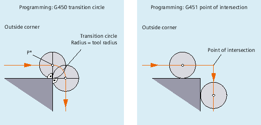
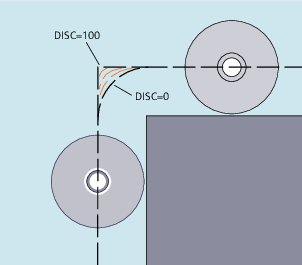

G450/G451
Traveling around a 90° outside corner with G450 or G451
At intermediate point P*, the control executes operations such as infeed movements or switching functions. These operations are programmed in blocks inserted between the two blocks forming the corner.
With respect to the data, for G450 the transition circle belongs to the next traversing command.
DISC
When DISC values greater than 0 are specified, transition circles are shown with an increased height – the result is transition ellipses or parabolas or hyperbolas.
